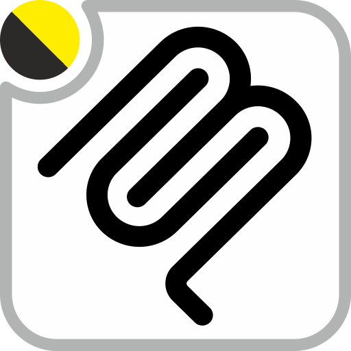

Odoo 14 and 19
The AI Engine runs inside your client's Odoo. Providers, agents, knowledge and approvals are Odoo records, and the agents live in plain Odoo modules. Open source, nothing to license.
Odoo series
14.019.0
Tested, with a branch ready to install.

Not a service on the side that you connect client by client. An AI that installs, updates and uninstalls like any other module, on the Odoo the client already runs.
Here the agents live in plain Odoo modules.
Add several, each for its job: conversation, audio, vision, video. If one fails, the next one answers.
Its code runs in a read-only sandbox. To change anything it proposes a plan, and a person approves it.
Contexts are edited and extended inside Odoo: their vocabulary, their rules, their habits.
/mcp with a personal key.Clone the 14.0 or 19.0 branch of pns_ai_mcp and pns_base into the addons path and install PNS AI Engine from Apps. On Odoo 14, first run pip install "openpyxl>=3.1.2".
Settings → Users: give yourself AI Administrator. Log out and back in.
AI Engine → Security → Users: your row, tick AI Conversational and press Generate API Key.
AI Engine → Connections → Providers: protocol, endpoint, API key and model, with the Conversation role.
Done. Point Cursor (or any MCP client) at https://<your-odoo>/mcp with the key in the X-MCP-API-Key header.
On GitHub: patanegra-soft/pns_ai_mcp.
main is one tree for every series: shared code in common/ and one stack per OWL generation (owl1 for Odoo 14, owl2 for 15 and later)../install_flat.sh 19.0 <dir> builds the flat module of a series. The branches 14.0 and 19.0 are that result, ready for the addons path.main with install_flat.sh (also pns_base) and try them on a test database first.unit_tests/, pytest) live in main. The Odoo tests travel with the module.Bugs: an issue, with the bug form. Ideas and questions: Discussions.
Odoo 14 y 19
El Motor de IA corre dentro del Odoo de tu cliente. Proveedores, agentes, conocimiento y aprobaciones son registros de Odoo, y los agentes viven en módulos normales de Odoo. Código abierto, nada que licenciar.
Versiones de Odoo
14.019.0
Probadas, con una rama lista para instalar.
No un servicio al lado que conectas cliente a cliente. Una IA que se instala, se actualiza y se desinstala como cualquier otro módulo, en el Odoo que el cliente ya tiene.
Aquí los agentes viven en módulos normales de Odoo.
Pon varios, cada uno para lo suyo: conversación, audio, imagen, vídeo. Si uno cae, responde el siguiente.
Su código corre en una caja de arena de solo lectura. Para cambiar algo propone un plan, y lo aprueba una persona.
Los contextos se editan y se amplían en el propio Odoo: su vocabulario, sus reglas, sus costumbres.
/mcp con una clave personal.Clona la rama 14.0 o 19.0 de pns_ai_mcp y de pns_base en el addons path e instala PNS AI Engine desde Aplicaciones. En Odoo 14, antes, pip install "openpyxl>=3.1.2".
Ajustes → Usuarios: date IA Administrador. Sal y vuelve a entrar.
Motor de IA → Seguridad → Usuarios: tu fila, marca IA Conversacional y pulsa Generar Clave API.
Motor de IA → Conexiones → Proveedores: protocolo, dirección, clave API y modelo, con el rol Conversación.
Listo. Apunta Cursor (o cualquier cliente MCP) a https://<tu-odoo>/mcp con la clave en la cabecera X-MCP-API-Key.
En GitHub: patanegra-soft/pns_ai_mcp.
main es un solo árbol para todas las versiones: código común en common/ y una pila por generación de OWL (owl1 para Odoo 14, owl2 para la 15 y siguientes)../install_flat.sh 19.0 <dir> construye el módulo plano de una versión. Las ramas 14.0 y 19.0 son ese resultado, listas para el addons path.main con install_flat.sh (también pns_base) y se prueban antes en una base de pruebas.unit_tests/, pytest) viven en main. Los tests de Odoo viajan con el módulo.Errores: un issue, con el formulario de error. Ideas y preguntas: Discussions.